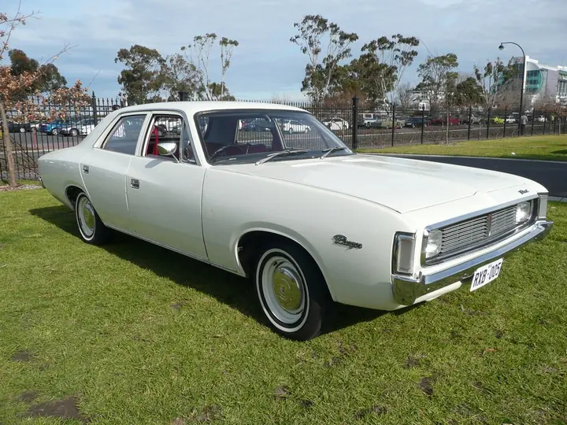
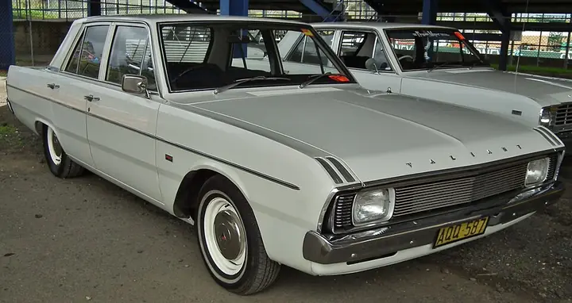
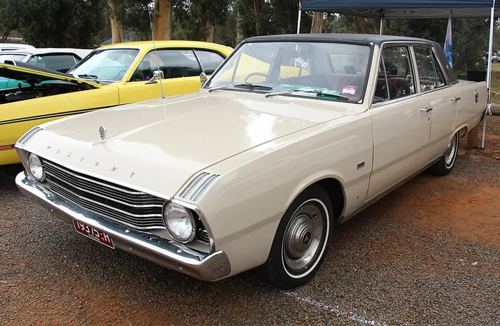
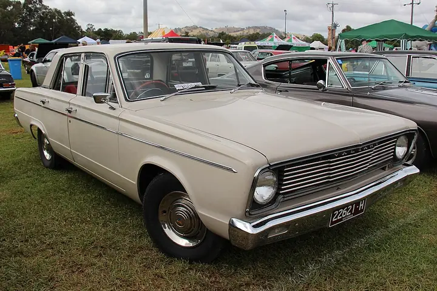
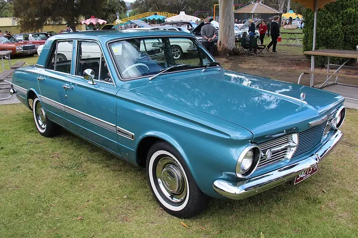
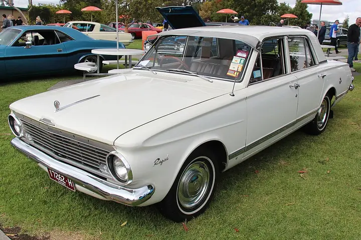
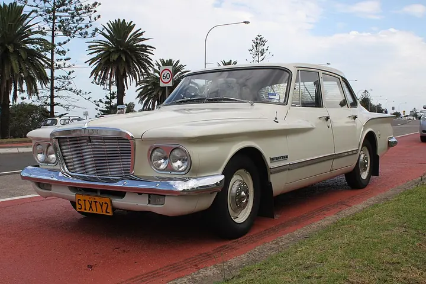

Chrysler Valiant
CM series · 1978–1981
Abstract
This generation of the Chrysler Valiant was built November 1978 – August 1981 in Australia: Tonsley Park, New Zealand: Petone (Todd Motors). Body styles: 4-door sedan, 5-door station wagon. Layout: FR layout. This generation has its own article: Chrysler Valiant (CM).
1Specifications
| Production | November 1978 – August 1981 |
|---|---|
| Assembly | Australia: Tonsley ParkNew Zealand: Petone (Todd Motors) |
| Body style | 4-door sedan5-door station wagon |
| Layout | FR layout |
| Engine | 245 cu in I6265 cu in I6318 cu in V8 |
| Transmission | 3-speed manual4-speed manual3-speed automatic |
| Wheelbase | 111 inches (2819 mm) |
| Length | 197.5 inches (5016 mm) (Sedan) |
| Width | 74.6 inches (1895 mm) |
| Height | 55.4 inches (1407 mm) (Sedan) |
| Weight | 3368 lb (1528 kg) (Sedan) |
| Predecessor | Chrysler CL Valiant |
| Successor | Mitsubishi Magna |
2Previous generations

.jpg){kind=link}



_(cropped).jpg){kind=link}

_Regal_sedan_(17825652163)_(cropped).jpg){kind=link}

.JPG){kind=link}

_(cropped).jpg){kind=link}

_(cropped).jpg){kind=link}

_sedan_(25009622274).jpg){kind=link}
3Generation by generation
Length +8% from the first to the last
RV1 (R Series) 19624,666 mm
SV1 (S Series) 19624,666 mm
AP5 Series 19634,709 mm
AP6 Series 19654,772 mm
VC Series 19664,782 mm
VE Series 19674,920 mm
VF Series 19694,885 mm
VH Series 19714,897 mm
VJ Series 19734,897 mm
VK Series 19754,895 mm
CL Series 19764,976 mm
CM series 19785,016 mm
Weight +29% from the first to the last
RV1 (R Series) 19621,181 kg
SV1 (S Series) 19621,227 kg
AP5 Series 19631,215 kg
AP6 Series 19651,245 kg
VC Series 19661,258 kg
VE Series 19671,338 kg
VF Series 19691,338 kg
VH Series 19711,406 kg
VJ Series 19731,402 kg
VK Series 19751,406 kg
CL Series 19761,439 kg
CM series 19781,528 kg